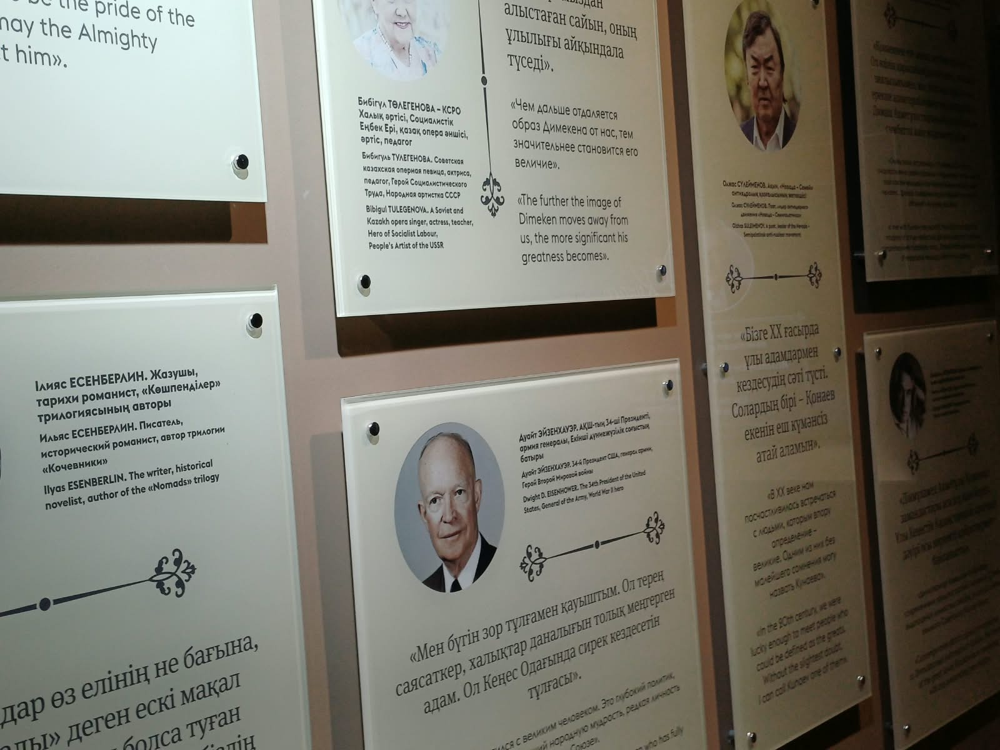

ИСТОРИЯ · НАСЛЕДИЕ · КАЗАХСТАН
Дом, который
сохранил историю
Мемориальное пространство в Алматы на пересечении улиц Кунаева и Кабанбай батыра. Архивные снимки, документы, предметы быта и экспозиции, раскрывающие эпоху и судьбы государственных деятелей Казахстана.

Не просто дом.
Целая эпоха.
Жумабек Ахметович Ташенов занимал пост Председателя Президиума Верховного Совета (1955–1960) и Председателя Совета министров Казахской ССР (1960–1961), принципиально отстаивая территориальную целостность Казахстана. В экспозиции музея также широко представлены материалы об эпохе развития Алма-Аты, промышленности, науки и личности Д. А. Кунаева.
Нажимайте на карточки экспонатов ниже, чтобы рассмотреть снимки в полном размере и прочитать пояснения о личности и деталях каждого кадра.
Каталог экспонатов
Нажмите на любую карточку, чтобы открыть фотографию в полном размере и прочитать информацию о личности и самом экспонате.
Пополнить виртуальный архив
Если у вас есть архивный снимок музея или экспоната, загрузите его — он сразу появится в каталоге.